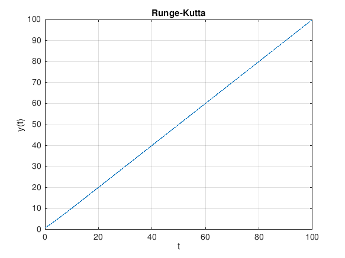

clear all % Were going to ue R-K method to model approximate solutions to the first order DE dy/dt = cos(t-y) % initial Condition y(0) = 1. ti = 0; % initial point tf = 100; % final endpoint h = 0.1; % step size, t - t0 n = (tf - ti)/h; % total # of steps t(1) =ti; % declare the starting t value in a for loop with t a running variable y(1) = 1; % initial condition y(0) = 1 for j = 1:n t(j+1) = h + t(j); f(j) = cos(t(j)-y(j)); % This states the differential at each iteration. % Runge Kutta Chapter 8.3 k1(j) = f(j); k2(j) = cos(t(j)+h/2-y(j)-h*k1(j)/2); k3(j) = cos(t(j)+h/2-y(j)+h*k2(j)/2); k4(j) = cos(t(j)+h-y(j)-h*k3(j)); y(j+1) = y(j) + (h*k1(j)/6)+(h*k2(j)/3)+(h*k3(j)/3)+(h*k4(j)/6); end figure(3) plot(t,y) xlabel('t') ylabel('y(t)') title('Runge-Kutta') hold on grid on